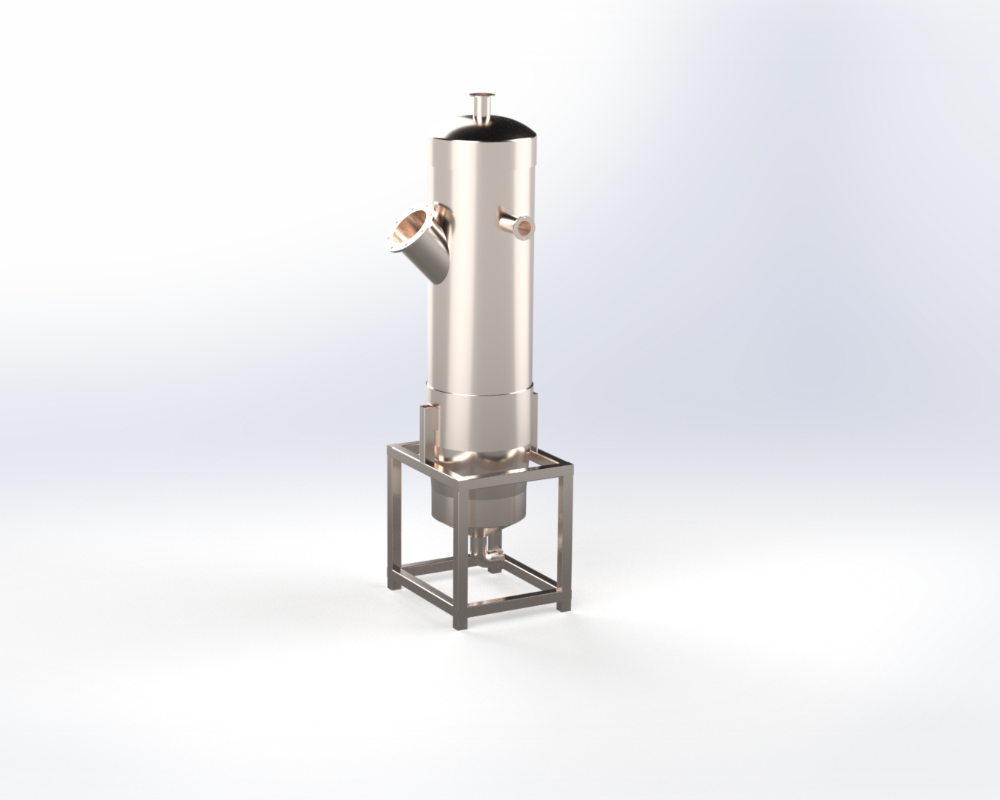

Técnica
Substrato, geração estimada, tecnologia de digestão, upgrading, logística de resíduo e condições do site.
Rating que classifica a maturidade do seu projeto.
Entre uma estimativa rápida e um projeto de investimento, falta uma resposta decisiva: o projeto está maduro o suficiente para avançar? O 4WaTT Score avalia quatro dimensões e entrega uma nota, um mapa de gaps e um plano de ação priorizado.
O simulador diz, em minutos, se o potencial vale uma conversa. O Score diz, em poucos dias, se o projeto está pronto para engenharia, financiamento e execução.
Cada dimensão recebe uma nota e pesa no score final. Assim, você sabe exatamente onde investir antes de avançar.
Substrato, geração estimada, tecnologia de digestão, upgrading, logística de resíduo e condições do site.
CAPEX, OPEX, modelo de receita, payback, TIR e viabilidade de financiamento bancário.
Licenciamento ambiental, regulação ANP, contratos de compra de gás, acesso à rede e créditos de carbono.
Equipe interna, infraestrutura disponível, parcerias, experiência com contratos e apetite a risco.
Ao final do Score, você não fica com uma nota isolada. Recebe um documento prático que serve de base para decisão interna e para acelerar a etapa seguinte.
Score geral e nota individual em técnica, economia, regulatório e operação.
Lista do que falta resolver, do mais crítico ao menos urgente, com estimativa de esforço.
Indicação clara: simular mais, iniciar Projeto de Investimento, estruturar financiamento ou resolver pendências regulatórias.

Quem tem resíduo e quer saber se o projeto de biogás ou biometano está maduro para engenharia.
Quem precisa de um diagnóstico objetivo para alinhar diretoria, engenharia e área de negócios.
Quem quer triar oportunidades e identificar os principais riscos antes de uma due diligence.
Quem precisa de uma visão independente da viabilidade para avaliar risco de crédito.

Nossa equipe de engenharia analisa as informações disponíveis e retorna com o Score e o plano de ação em até 5 dias úteis.
Preencha e nossa equipe entra em contato.